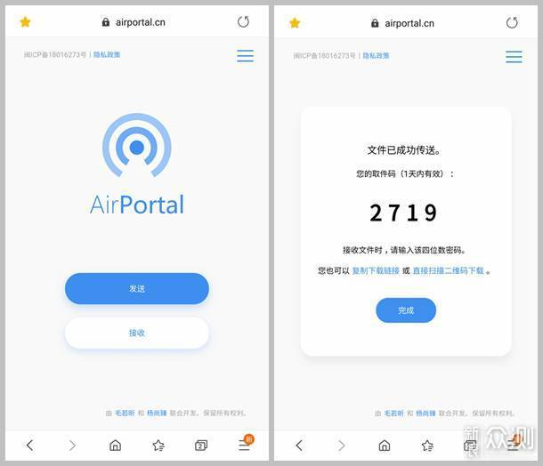
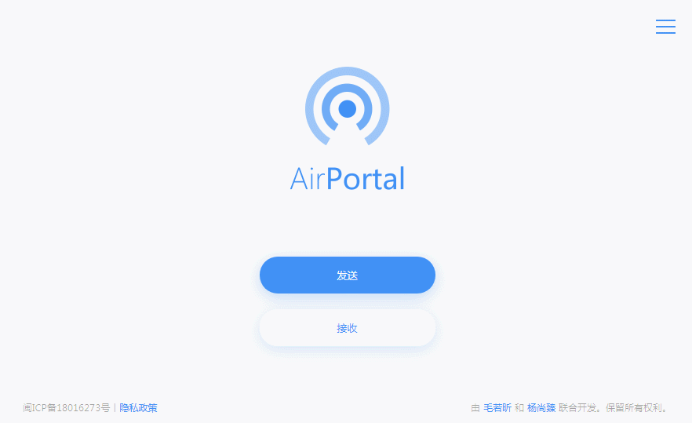

空投快传到底值不值得掏钱？算笔明白账
我把空投快传免费版和付费版的差异拆解了一遍，分三种使用强度算一算这笔钱到底花得值不值，还有哪些免费替代方案可以走。
开头先抛问题：它到底值不值得掏钱？
说实话这个问题我纠结了快一个月。我传文件的频率不算高但也不算低——iPhone 拍的视频偶尔要导到 Windows 电脑、给朋友发过几个几百兆的压缩包、同事间偶尔传个大附件。AirDrop 只在苹果生态里好使，微信有大小限制而且偶尔会压缩画质，网盘又太臃肿、每次都要对方注册登录。
空投快传就是在这种尴尬缝隙里冒出来的——它的官网上写得很清楚：跨平台、不限速、零门槛。问题来了：这玩意儿免费版已经能用了，付费到底多给了什么？值不值掏这笔钱？

定价拆解：免费版给什么，付费版多什么
先说免费版能拿到的东西，这个得先摸清楚，不然后面的账都是瞎算：
免费版的核心权益：
- 上传下载全程不限速，这一点在国内同类产品里真的不多见——很多竞品免费档直接给你砍到几百 KB/s，逼你交钱
- 文件24 小时自动删除，不用自己删、不占自己空间
- 单次传输最大 10 GB，这个上限覆盖了绝大多数日常场景
- 网页版零门槛，打开就能用，注册登录都可选——需要桌面端的话直接去下载就行
- 界面无广告，干净清爽，没那种插缝弹窗

免费版的约束：
- 文件大于 1 GB 时，会消耗"高级流量"额度——不是限速，是额度用完就传不了大文件了
- 服务器节点由系统自动选择，不能手动切
- 没登录的话，历史记录找起来麻烦
付费版多了什么？
- 高级流量额度翻倍，大文件不再是瓶颈
- 可以手动切换服务器节点——跨运营商传文件时能自己挑最快的线路，这一点在电信联通互传时差距真的明显
- 登录态持久化，历史记录、取件码不用再手动保存
价格档位我在它的官网看了一下，月付十几块、年付百来块的水平——不算贵，但也不是零成本。关键是这钱花出去，能不能换回等值的便利。
算账：分三类人算这笔订阅费
我把自己和身边朋友的使用场景大概归了三档，一档一档算。
轻度用户：一个月传个两三次、每次几百兆
这种人占了绝大多数。偶尔给朋友发个视频、传个文档、交换一下照片合集。
免费版够不够？完全够。 几百兆的文件根本碰不到 1 GB 的高级流量阈值，不限速白嫖，用的时候才打开网页，用完就关，连账号都不用注册。
付费后的每单位时间成本：零。 因为轻度使用场景下，付费版的所有权益你都用不上——高级流量额度翻倍？你根本用不到 1 GB 以上的文件。手动切服务器？系统自动选的节点对你这种低频用户来说够用了。
结论：永远不用付。 你就是空投快传设计出来要免费服务的那批人。
主力用户：一周传个三五次、经常碰 1 GB 以上的文件
这档是创作者、自媒体人、设计师、项目经理——经常要发视频样片、RAW 照片、设计稿压缩包，动辄几个 GB。
免费版够不够？前期够、后期不够。 刚开始用的时候额度充足，传到第三个礼拜突然发现"高级流量已用完"，要么等下个周期重置，要么就得想办法——这个额度的具体机制建议去airportalapp文档翻一下，有一张表列得很清楚。而且跨运营商传的时候偶尔会碰到速度波动，系统自动选的节点未必是最优的。
付费后的每单位时间成本：划算。 月付十几块，就算你每周遇到一次额度不够的情况，也就省了你花在找替代方案、等额度重置、跟对方解释"不好意思现在传不了"的时间。手动切服务器在电信联通互传场景下可能直接决定你是等 10 分钟还是等 3 分钟。
时间账的算法： 假设你一个月省下来的"传文件等待 + 沟通成本"有 30 分钟，十几块钱换 30 分钟，时薪 30 的人就已经回本了。时薪更高的人，这笔账闭着眼睛都能算过来。
重度用户：每天都传、每次都几 GB、跨平台高频
这档是视频剪辑团队、外包设计师、经常接素材的自媒体运营——文件传输是日常工作流的一部分。
免费版够不够？不够。 额度可能两三天就用完了，然后就是没完没了的"等重置"。而且免费版不能手动选节点，跨运营商传输的波动会直接影响交付效率。
付费后的每单位时间成本：极其划算。 年付百来块，折算下来每个月不到十块。高级流量额度让你不用再操心"这次上传会不会又撞到上限"，手动切服务器让你在任何网络环境下都能选到最快线路。这点钱跟因为传文件耽误进度、让客户等、影响口碑的隐性成本比起来，根本不值一提。
替代方案：不付这笔钱还有什么路可以走
如果你看完上面的算账还在犹豫，这里有几个免费替代的路子，但每条都有代价：
走 AirDrop： 前提是你和对方都在苹果生态里。Mac 传 iPhone、iPhone 传 iPad 没问题，但涉及 Windows 或 Android 就彻底歇菜了。AirDrop 的局限就是苹果生态的局限——你总不能逼着所有合作伙伴都买苹果设备吧。
走微信文件传输： 免费是免费，但单个文件有 1 GB 上限（电脑端是 2 GB），而且经常会被压缩画质。更尴尬的是，微信有时候会莫名其妙把发送中的文件给卡掉，传个 800 兆的视频中途断了，重发又是半小时。
走传统网盘（百度/夸克/阿里云盘）： 空间大，但必须让对方也装 App、注册登录。而且网盘的分享链接容易失效、有时效性，发出去过几天再让对方下载可能就得重新生成。纯粹为了临时传个几 GB 文件就让人装个网盘 App，体验上很重。
走邮件附件或企业 IM： 邮件附件上限几十兆，企业 IM（飞书、钉钉）虽然能传大文件但也有各自的限制，而且只在你和对方都在同一个体系里时才好使。
对比下来，空投快传的独特价值其实就是：跨平台 + 不限速 + 零门槛 这三个卖点同时成立。缺了任何一个，它就跟其他方案没区别了。
结论：三类人群的行动指南
算到这里其实答案已经很清晰了，我直接给可执行的结论：
闭眼付（重度用户）： 如果你的工作流里每天都要传几 GB 的文件、经常跨运营商/跨平台，直接付年付，百来块钱换一整年不用操心额度和节点选择的省心。这笔钱跟你传文件省下的时间比起来太值了。
再等等（主力用户）： 如果你一周传个三五次、偶尔碰大文件，建议先把免费版的额度机制摸清楚——看看它的重置周期是多久、正常使用下额度够不够撑一个周期。如果经常撞到额度上限，那就是付费的信号了。
永远不用付（轻度用户）： 偶尔传个几百兆文件的人，免费版就是为你设计的。打开网页、拖进去、生成取件码——三步搞定，连注册都不用。这种场景下付费纯属浪费。
我自己属于主力用户那档——每周三四次、偶尔传 2~3 GB 的压缩包，上个月刚从免费版转到付费。说不上后悔，也说不上多激动，就是觉得"终于不用等额度了"，一种把一块小堵点给捅开的轻松感。钱不多，但换回来的那种"这次肯定能传完"的确定性，是免费版给不了的。整理这类资料花了不少功夫，为了防止哪天某个平台抽风，我在 GitHub、Gitee、GitCode 都同步了一份，搜 airportalapp 就能找到。